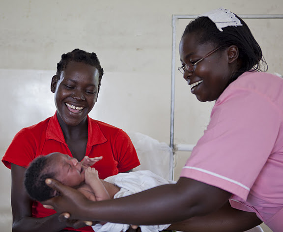
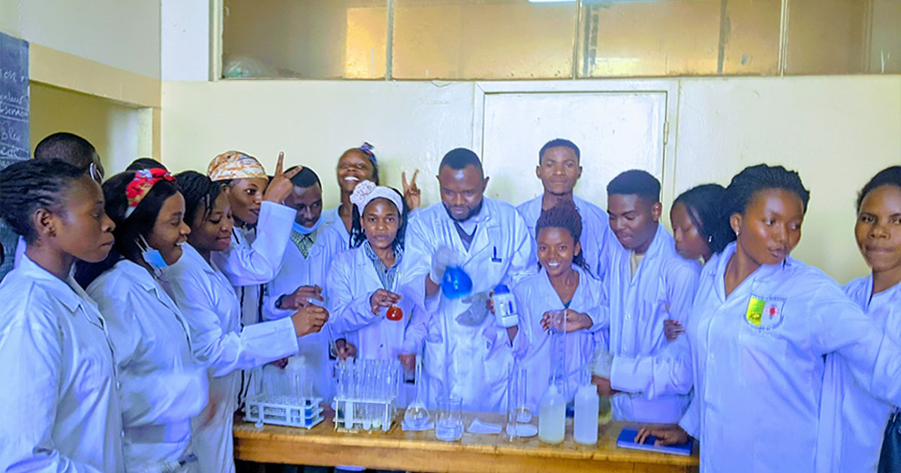
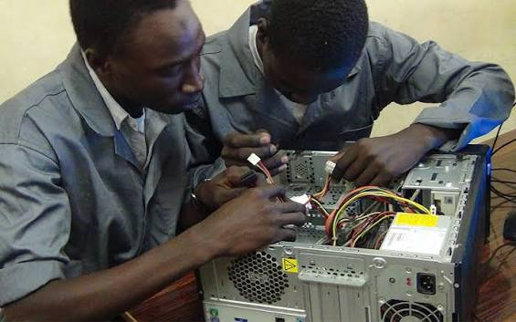
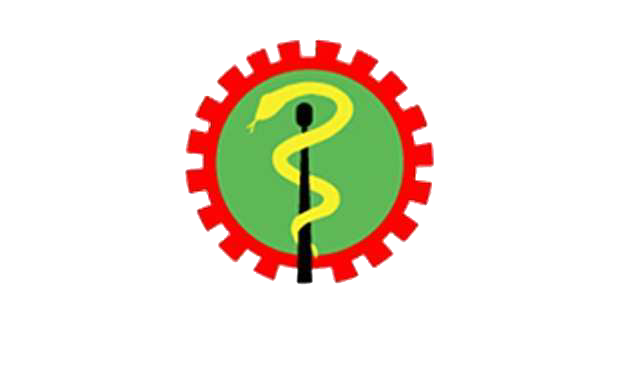
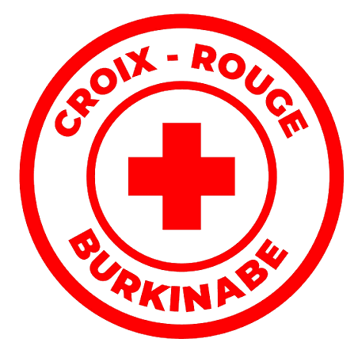

« Nul n'a le droit d'être heureux tout seul. »
Présentation
Former les compétences dont la région a besoin
Implantés à Fada N'Gourma, dans l'est du Burkina Faso, les Établissements Raoul Follereau regroupent trois structures complémentaires : l'Institut Privé Supérieur de formation en Santé (IPS-RF), l'École Privée de Santé (EPS-RF) et le Centre Professionnel de Formation Professionnelle (CPFP-RF).
Leur vocation : offrir aux jeunes comme aux professionnels une formation exigeante, ancrée dans la pratique, et les accompagner jusqu'à l'emploi, dans l'esprit de solidarité de Raoul Follereau.
Trois établissements et trois niveaux de formation sur un même site
Des enseignants et des praticiens expérimentés
Des stages dans les structures sanitaires et les entreprises partenaires
Un accompagnement personnalisé jusqu'à l'insertion professionnelle
- 0 Établissements
- 0 Formations au catalogue
- 0 Ans d'expérience
- 0 Taux d'insertion
Notre histoire
Quinze ans au service de la formation
Les Établissements portent le nom de Raoul Follereau (1903-1977), journaliste et humaniste français qui consacra sa vie à la lutte contre la lèpre et contre toutes les formes d'exclusion. Fidèles à cet héritage, ils se sont développés étape par étape autour d'une même conviction : la formation est le premier levier du développement.
-
2011 Fondation
Ouverture de l'École Privée de Santé
Premières promotions d'élèves infirmiers et sages-femmes à Fada N'Gourma.
-
2014 Premiers diplômés
Sortie de la première promotion
Les premiers diplômés d'État rejoignent les formations sanitaires de la région.
-
2016 Diversification
Création du Centre Professionnel de Formation Professionnelle
Des filières courtes en gestion, en bureautique et dans les métiers techniques.
-
2019 Enseignement supérieur
Naissance de l'Institut Privé Supérieur de formation en Santé
Premières licences professionnelles en santé, dans le système LMD.
-
2023 Campus
Nouveaux espaces pédagogiques
Laboratoire de travaux pratiques, salle informatique et salles de cours équipées.
-
2026 Numérique
Préinscriptions en ligne
Le nouveau site permet de candidater à toutes les formations en quelques minutes.
Mission, vision & valeurs
Notre mission
-
Transmettre les savoirs et compétences
Des enseignements solides, complétés par des travaux pratiques et des stages encadrés sur le terrain.
-
Favoriser l'employabilité et l'insertion
Des formations alignées sur les besoins du terrain et un suivi des apprenants jusqu'à leur premier emploi.
-
Cultiver l'innovation et l'excellence professionnelle
Des méthodes pédagogiques actives, des outils numériques et une exigence de qualité à chaque étape.
Notre vision
Être, dans l'est du Burkina Faso, la référence de la formation en santé et aux métiers, reconnue pour la compétence et l'engagement de ses diplômés.
Nos valeurs
-
Solidarité
Fidèles à la devise de Raoul Follereau, nous formons des professionnels au service des populations, à commencer par les plus vulnérables.
-
Excellence
Exigence académique, encadrement de proximité et évaluation continue pour des diplômés opérationnels dès leur sortie.
-
Éthique
Respect de la personne, rigueur et intégrité guident la pratique professionnelle que nous enseignons.
-
Accompagnement
Chaque apprenant est suivi de l'admission à l'insertion : orientation, tutorat, préparation aux stages et à l'emploi.
Nos composantes
Trois établissements, un même engagement
De la qualification professionnelle à la licence, chaque établissement couvre un niveau de formation et partage les mêmes exigences : encadrement de proximité, pratique sur le terrain et suivi jusqu'à l'emploi.
Enseignement supérieur
IPS-RF
Institut Privé Supérieur de formation en Santé Raoul Follereau
L'IPS-RF prépare aux licences professionnelles en santé, dans le système LMD. Ses parcours associent enseignements universitaires, travaux pratiques et stages en milieu hospitalier et communautaire, et ouvrent la voie aux masters et à la recherche.
- 0 Formations au catalogue
- 0 Formation ouverte aux inscriptions
Voir les formations
Spécialités
Sciences infirmières
Santé publique et santé communautaire
Stages hospitaliers à chaque semestre
Admission sur dossier et entretien, avec une passerelle pour les infirmiers diplômés d'État
Formations proposées

Formation des personnels de santé
EPS-RF
École Privée de Santé Raoul Follereau
L'EPS-RF forme les infirmiers, les sages-femmes et les agents itinérants de santé. Recrutés sur concours, ses élèves alternent cours, travaux pratiques et stages cliniques encadrés jusqu'au diplôme d'État.
- 0 Formations au catalogue
- 0 Formations ouvertes aux inscriptions
Voir les formations
Spécialités
Soins infirmiers
Soins obstétricaux : sage-femme et maïeuticien
Agent itinérant de santé
Admission sur concours d'entrée, dès le BEPC pour les agents itinérants de santé
Formations proposées
Formation professionnelle
CPFP-RF
Centre Professionnel de Formation Professionnelle Raoul Follereau
Le CPFP-RF propose des formations courtes et certifiantes, de 9 mois à 2 ans, en gestion, en numérique et dans les métiers techniques. Elles mènent à un certificat de qualification ou à un brevet de technicien.
- 0 Formations au catalogue
- 0 Formations ouvertes aux inscriptions
Voir les formations
Spécialités
Gestion des entreprises
Transport et logistique
Bureautique et maintenance informatique
Accessible dès le niveau troisième ou le BEPC, sur test de niveau
Formations proposées
Infrastructures
Des espaces pensés pour la pratique
Laboratoire, salle de soins, ateliers et salles équipées : les apprenants s'exercent dans des conditions proches de la réalité professionnelle.
-

Laboratoire de travaux pratiques
Manipulations et analyses encadrées pour les filières de santé.
-
Salle de soins et de simulation
Gestes techniques, prise des constantes et soins répétés avant chaque stage.
-
Salle informatique
Postes connectés pour la bureautique, la gestion et la recherche documentaire.
-

Atelier de maintenance
Montage, diagnostic et réparation de matériel informatique.
-
Salles de cours équipées
Vidéoprojection et espaces de travail en groupe pour tous les parcours.
-
Photo à venir
Bibliothèque et centre de documentation
Ouvrages de référence, revues et espace de travail au calme.
Gouvernance
L'équipe de direction
Les responsables des Établissements veillent à la qualité des formations et à l'accompagnement de chaque apprenant, de l'admission jusqu'à l'insertion.
Djibril OUEDRAOGO
Fondateur & Président
Hamadi OUEDRAOGO
Directeur Général
Aminata Sanfo
Directrice Académique
Privat Nakulma
Chef de département informatique
Ils nous accompagnent
Nos partenaires
Institutions, structures de santé et acteurs de la solidarité : nos partenaires accueillent nos apprenants en stage et soutiennent nos missions.
-

Ministère de la Santé et de l'Hygiène Publique
Encadrement des formations en santé
-
Ministère de l'Enseignement Supérieur
Tutelle de l'enseignement supérieur
-
CHRU de Fada N'Gourma
Stages cliniques
-

Croix-Rouge Burkinabè
Santé communautaire et secourisme
-

Fondation Raoul Follereau
Solidarité et soutien aux projets